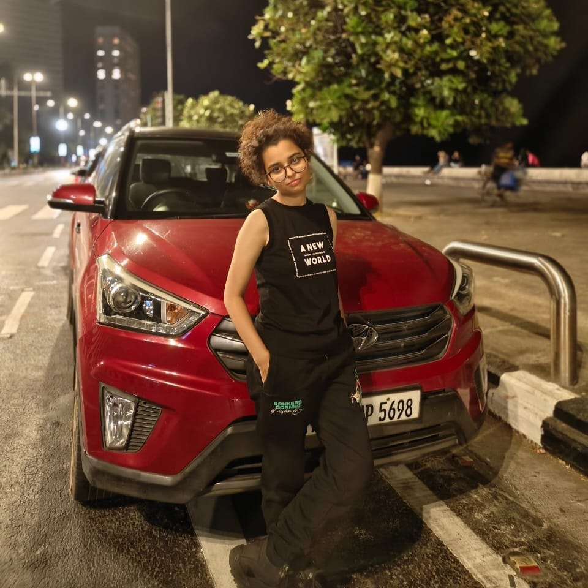
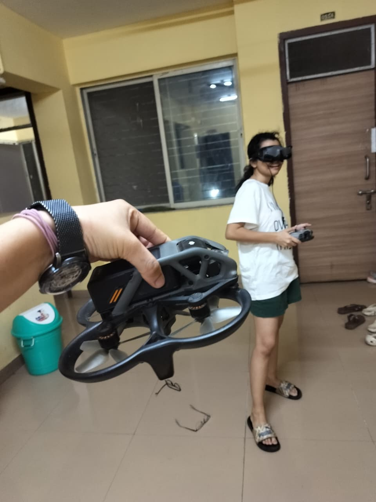
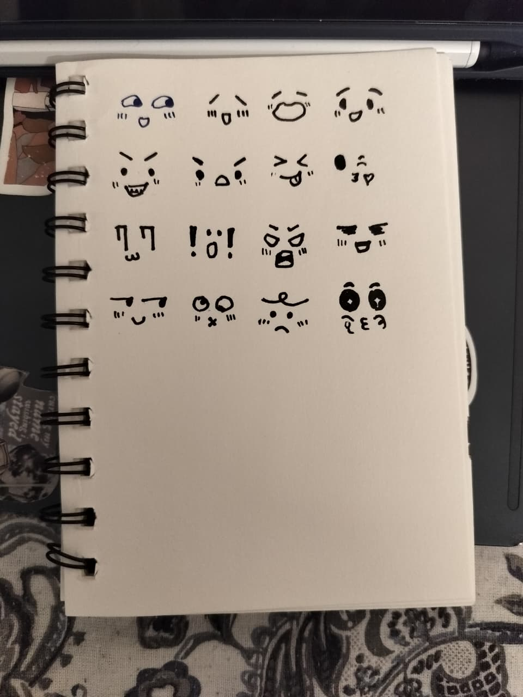
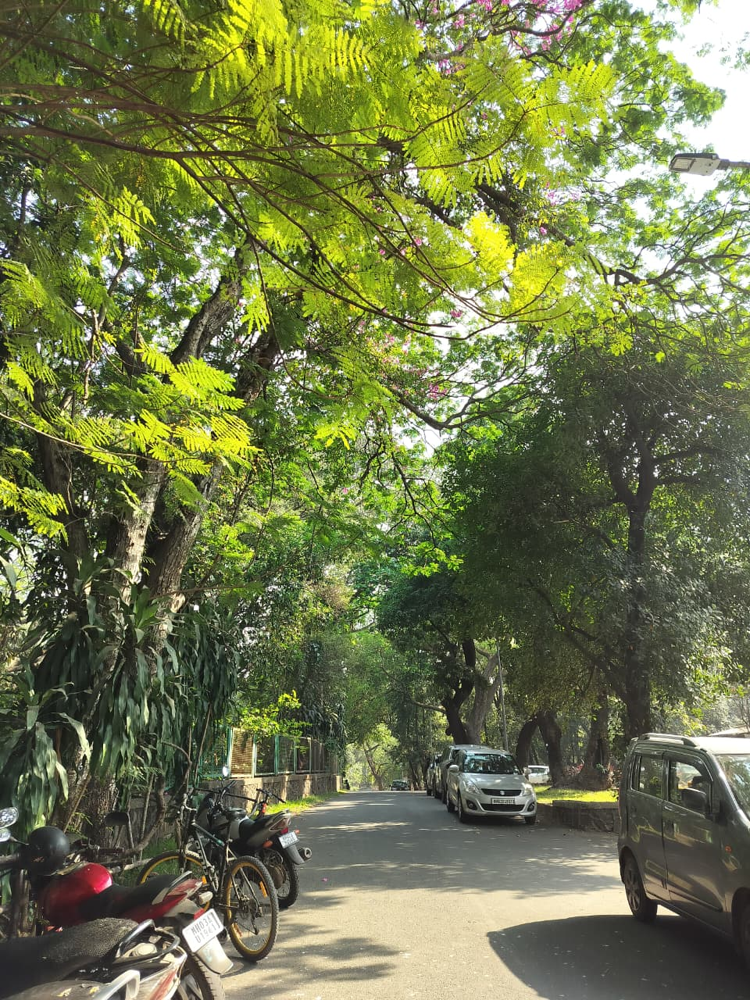

About
Background
I am in my final year of a B.Tech in mechanical engineering at IIT Bombay. I started in dynamical systems, which is how the kernel flows work happened, and the move into machine learning came from the same place: wanting to know what a learned object actually represents, and where that representation stops being true.
Since then the work has been mostly independent, mostly empirical, and increasingly about safety. I did not come to this from computer science.
Education
-
2023–2027
Indian Institute of Technology Bombay
B.Tech, Mechanical Engineering. Coursework in linear algebra, probability, complex analysis, statistical machine learning, applied data science, and advanced machine learning. Currently taking theoretical machine learning.
What I care about outside the research
Generative models are being trained on work that people made, and the people who made it were not asked. I think the provenance question and the privacy question are the same question wearing different clothes, and that both are more interesting than the quality complaint everyone leads with.
I also think the energy cost of all this is real and underdiscussed, which sits oddly next to my belief that these tools are genuinely good for scientific work.
Outside research
- Painting
- Paint and doodle, mostly in notebooks.
- Cinema
- Recent and enthusiastic convert. Letterboxd.
- Fiction
- Reading it, constantly. Goodreads.
- Karate
- Black belt, five years.
- Badminton
- Badly, happily.
- Driving
- Learned this year. Currently the best part of my week.
- Gaming
- Will travel anywhere in Powai or Mumbai for a gaming parlour, especially with someone who wants to argue about AI safety while we play.
Archive
Paintings, notebooks, and whatever else was worth keeping.



